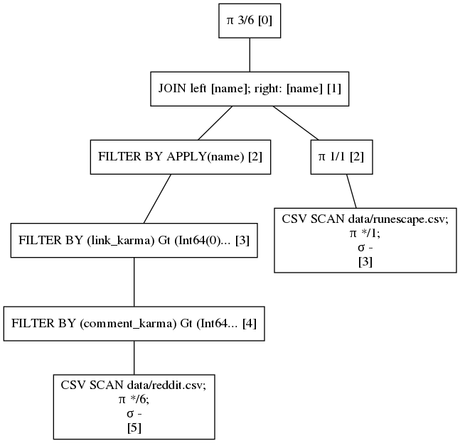
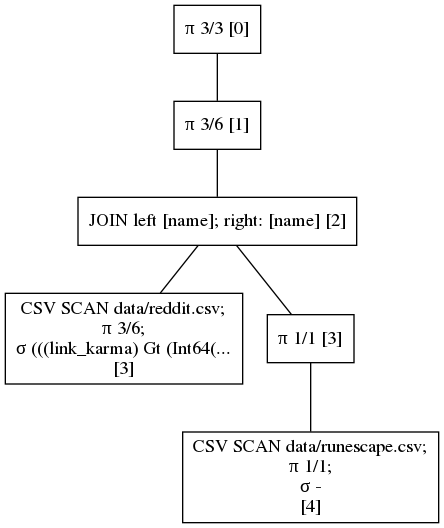

Projection pushdown
Let's expand our query from the previous section by joining the result of the FILTER operation with the runescape data to see which popular Reddit username that have a username starting with an a also played Runescape. That must be something we are all interested in!
The query that does so may look like this.
reddit = pl.scan_csv("data/reddit.csv")
runescape = pl.scan_csv("data/runescape.csv", has_headers=False).select(
col("column_1").alias("name")
)
reddit = (
reddit.filter(col("comment_karma") > 0)
.filter(col("link_karma") > 0)
.filter(col("name").str_contains(r"^a"))
)
joined = reddit.join(runescape, on="name", how="inner").select(
["name", "comment_karma", "link_karma"]
)
joined.fetch(int(1e7))
And yields the following DataFrame.
shape: (7315, 3)
╭────────────┬───────────────┬────────────╮
│ name ┆ comment_karma ┆ link_karma │
│ --- ┆ --- ┆ --- │
│ str ┆ i64 ┆ i64 │
╞════════════╪═══════════════╪════════════╡
│ a0110a ┆ 158 ┆ 6 │
├╌╌╌╌╌╌╌╌╌╌╌╌┼╌╌╌╌╌╌╌╌╌╌╌╌╌╌╌┼╌╌╌╌╌╌╌╌╌╌╌╌┤
│ a0e ┆ 136 ┆ 37 │
├╌╌╌╌╌╌╌╌╌╌╌╌┼╌╌╌╌╌╌╌╌╌╌╌╌╌╌╌┼╌╌╌╌╌╌╌╌╌╌╌╌┤
│ a0me ┆ 2155 ┆ 105 │
├╌╌╌╌╌╌╌╌╌╌╌╌┼╌╌╌╌╌╌╌╌╌╌╌╌╌╌╌┼╌╌╌╌╌╌╌╌╌╌╌╌┤
│ a1000words ┆ 10 ┆ 24 │
├╌╌╌╌╌╌╌╌╌╌╌╌┼╌╌╌╌╌╌╌╌╌╌╌╌╌╌╌┼╌╌╌╌╌╌╌╌╌╌╌╌┤
│ ... ┆ ... ┆ ... │
├╌╌╌╌╌╌╌╌╌╌╌╌┼╌╌╌╌╌╌╌╌╌╌╌╌╌╌╌┼╌╌╌╌╌╌╌╌╌╌╌╌┤
│ azzore ┆ 1886 ┆ 167 │
├╌╌╌╌╌╌╌╌╌╌╌╌┼╌╌╌╌╌╌╌╌╌╌╌╌╌╌╌┼╌╌╌╌╌╌╌╌╌╌╌╌┤
│ azzron ┆ 815 ┆ 2967 │
├╌╌╌╌╌╌╌╌╌╌╌╌┼╌╌╌╌╌╌╌╌╌╌╌╌╌╌╌┼╌╌╌╌╌╌╌╌╌╌╌╌┤
│ azzure11 ┆ 264 ┆ 509 │
├╌╌╌╌╌╌╌╌╌╌╌╌┼╌╌╌╌╌╌╌╌╌╌╌╌╌╌╌┼╌╌╌╌╌╌╌╌╌╌╌╌┤
│ azzurri10 ┆ 51868 ┆ 3353 │
├╌╌╌╌╌╌╌╌╌╌╌╌┼╌╌╌╌╌╌╌╌╌╌╌╌╌╌╌┼╌╌╌╌╌╌╌╌╌╌╌╌┤
│ azzwhole ┆ 18198 ┆ 311 │
╰────────────┴───────────────┴────────────╯
Break it down
Again, let's take a look the query plan.
joined.show_graph(optimized=False)

Now were focussed on the projection's indicated with π. The first node shows π 3/6, indicating that we select 3 out of 6 columns in the DataFrame. If we look the csv scans we see a wildcard π */6 and π */1 meaning that we select all of 6 columns of the reddit dataset and the one and only column from the runescape dataset respectively.
This query is not very optimal. We select all columns from both datasets and only show 3/6 after join. That means that there were some columns computed during the join operation that could have been ignored. There were also columns parsed during csv scanning only to be dropped at the end. When we are dealing with DataFrame's with a large number of columns the redundant work that is done can be huge.
Optimized query
Let's see how Polars optimizes this query.
joined.show_graph(optimized=True)

The projections are pushed down the join operation all the way to the csv scans. This means that both the scanning and join operation have become cheaper due to the query optimization.
Performance
Let's time the result before and after optimization.
without optimization
$ time time python -m book.src.examples.lazy_chapter.projection_pushdown_0_timing False
real 0m3,273s
user 0m9,284s
sys 0m1,081s
with optimization
$ time time python -m book.src.examples.lazy_chapter.projection_pushdown_0_timing True
real 0m1,732s
user 0m7,581s
sys 0m0,783s
We can see that we almost reduced query time by half on this simple query. With real business data often comprising of many column, filtering missing data, doing complex groupby and joins we expect this difference between unoptimized queries and optimized queries to only grow.